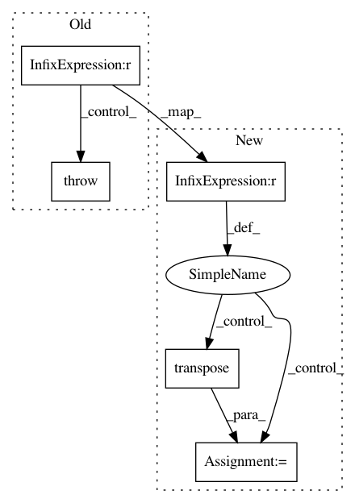

bfc638d502b8b991e6ef5aaaa1946049312e6336,python/caffe/io.py,Transformer,set_mean,#Transformer#,236
Before Change
ms = (1,) + ms
if len(ms) != 3:
raise ValueError("Mean shape invalid")
if ms != self.inputs[in_][1:]:
raise ValueError("Mean shape incompatible with input shape.")
self.mean[in_] = mean
def set_input_scale(self, in_, scale):
After Change
ms = (1,) + ms
if len(ms) != 3:
raise ValueError("Mean shape invalid")
if ms != self.inputs[in_][1:]:
in_shape = self.inputs[in_][1:]
m_min, m_max = mean.min(), mean.max()
normal_mean = (mean - m_min) / (m_max - m_min)
mean = resize_image(normal_mean.transpose((1,2,0)),
in_shape[1:]).transpose((2,0,1)) * \
(m_max - m_min) + m_min
self.mean[in_] = mean
def set_input_scale(self, in_, scale):
In pattern: SUPERPATTERN
Frequency: 3
Non-data size: 5
Instances
Project Name: BVLC/caffe
Commit Name: bfc638d502b8b991e6ef5aaaa1946049312e6336
Time: 2017-11-02
Author: geunsik.lim@samsung.com
File Name: python/caffe/io.py
Class Name: Transformer
Method Name: set_mean
Project Name: BVLC/caffe
Commit Name: 738c8758e30c6f8bdf9155529aeb431547af65d6
Time: 2014-05-19
Author: shelhamer@imaginarynumber.net
File Name: python/caffe/pycaffe.py
Class Name:
Method Name: _Net_set_mean
Project Name: cornellius-gp/gpytorch
Commit Name: bca150def5e45d0b55d5d20860e3e1b6b6d1ed42
Time: 2021-02-15
Author: wjm363@nyu.edu
File Name: gpytorch/distributions/multivariate_normal.py
Class Name: MultivariateNormal
Method Name: rsample